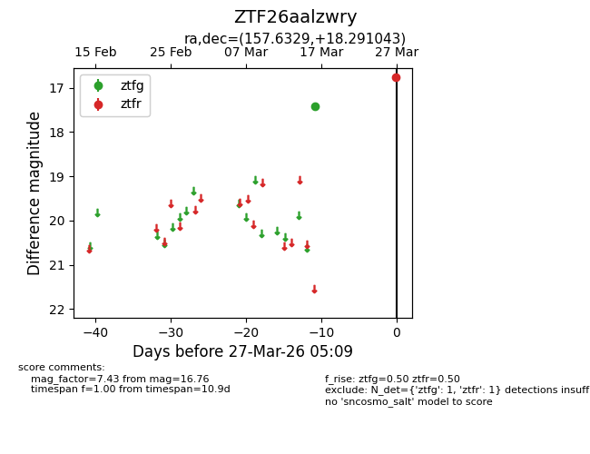
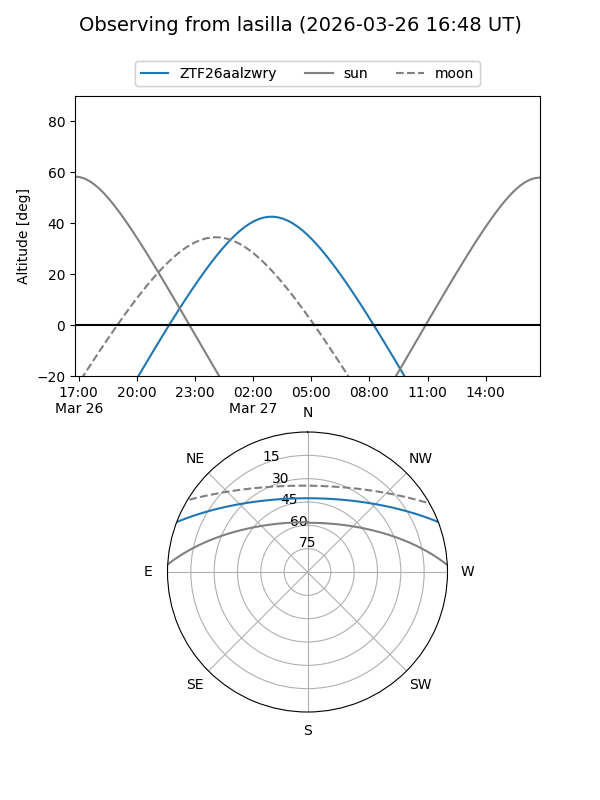
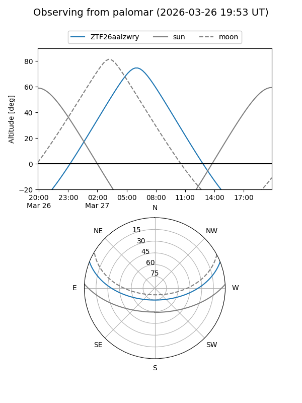

ZTF26aalzwry
Target ZTF26aalzwry at 2026-03-27 05:12
Aliases and brokers:
FINK: link
Lasair: link
ALeRCE: link
alt names
ZTF26aalzwry (ztf,fink_ztf)
Coordinates:
equatorial (ra, dec) = 157.6329,+18.29104
equatorial (HMS+DMS) = 10:30:31.89,+18:17:27.75
galactic (l, b) = (220.6625,+56.44818)
Flags:
Photometry:
last ztfg=17.43, ztfr=16.76
1 ztfg, 1 ztfr detections
Lightcurve

Visibility


Additional plots